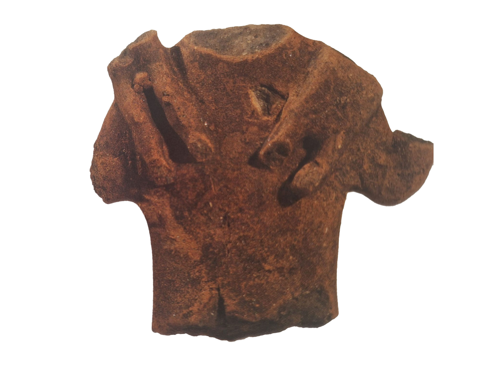

Popluna
Statua con Maialino. Probabilmente una divinità.

Home |
Le federazioni osche |
Localizzazione musei e siti |
Chi siamo |
Dove trovarci |
|
Popluna |
Statua con Maialino. Probabilmente una divinità. |
|
Statuetta Femminile Con Faciulli Sulle Spalle  |
Statuetta Votiva di una donna incinta 
|